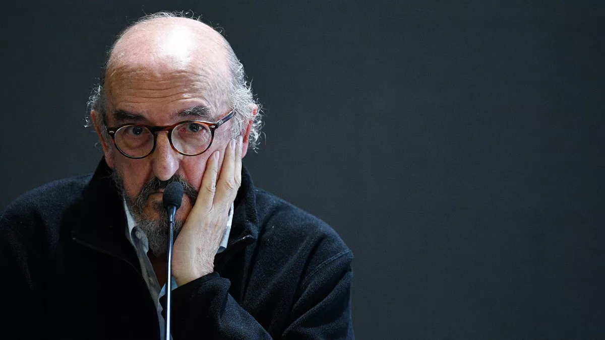

INFORMATIONS
CLASSEMENTS
CLENDRIER
Rankings
BUTEURS
PASSEURS
LIGA - DEMBÉLÉ ET GRIEZMANN BUTEURS, LE BARÇA SE BALADE FACE À LA REAL SOCIEDAD (1-6)
SUAREZ BUTEUR, OBLAK SAUVEUR : L'ATLÉTICO DOMINE ALAVÉS POUR CONSERVER SON AVANCE EN TÊTE
LES BLEUS PASSENT-ILS A COTE LES MEILLEURS DU BENZEMA
LIGA - INCROYABLE : SÉVILLE ARRACHE LE NUL FACE À VALLADOLID (1-1) À LA 94E GRÂCE À SON GARDIEN BONO...
REVIVEZ LES MEILLEURS MOMENTS DU BARCA-REAL SOCIEDAD
LIGA : QUI D'AUTRE ? UN ENCHAÎNEMENT CLINIQUE ET BENZEMA MET LE REAL SUR LA BONNE VOIE...
COMMENT LES JOUEURS ESPAGNOLS SONT EN TRAIN DE TOURNER LE DOS AUX JOURNALISTES
CURRY, L'ANCIEN AGENT DE NEYMAR: S'IL DOIT REJOUER AVEC MESSI C'EST A BARCELONE...
ZIDANE MAINTIENT SUR LE MYSTÈRE SUR SON AVENIR AU REAL MADRID : "JE NE PLANIFIE RIEN DU TOUT"
LIGA - REAL MADRID : EDEN HAZARD POURRAIT SE FAIRE OPÉRER ET MANQUER L'EURO
FC BARCELONE - JAUME ROURES APPORTE 30 MILLIONS POUR AIDER JOAN LAPORTA À DEVENIR PRÉSIDENT
TRANSFERTS - LE REAL MADRID N'EST PAS INTÉRESSÉ PAR UN RETOUR DE CRISTIANO RONALDO...
LIGA : LE FC SÉVILLE S'EST IMPOSÉ GRÂCE À YOUSSEF EN-NESYRI CONTRE LE BETIS ET CONFORTE SA 4E PLACE

 LIGA : QUI D'AUTRE ? UN ENCHAÎNEMENT CLINIQUE ET BENZEMA MET LE REAL SUR LA BONNE VOIE...
COMMENT LES JOUEURS ESPAGNOLS SONT EN TRAIN DE TOURNER LE DOS AUX JOURNALISTES
LIGA : QUI D'AUTRE ? UN ENCHAÎNEMENT CLINIQUE ET BENZEMA MET LE REAL SUR LA BONNE VOIE...
COMMENT LES JOUEURS ESPAGNOLS SONT EN TRAIN DE TOURNER LE DOS AUX JOURNALISTES